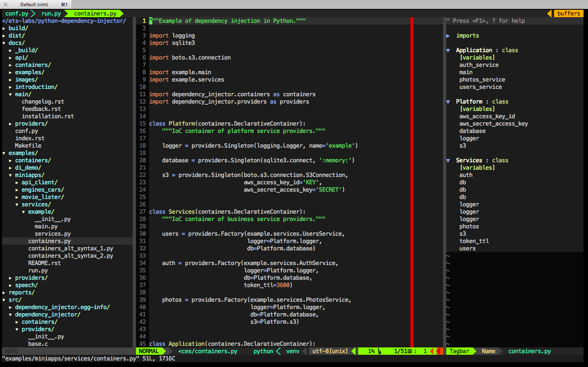

My Projects
I have several public open-source projects that I work on when I have some spare time. This pages is intended to keep very short summary about each of mine projects and contain links to the resources associated with them.
Dependency Injector


Dependency Injector is a dependency injection microframework for Python. It was designed to be unified, developer-friendly tool that helps to implement dependency injection design pattern in formal, pretty, Pythonic way.
Dependency Injector framework key features are:
- Easy, smart, pythonic style.
- Obvious, clear structure.
- Extensibility and flexibility.
- High performance.
- Memory efficiency.
- Thread safety.
- Documentation.
- Semantic versioning.
Dependency Injector containers and providers are implemented as C extension types using Cython.
Brief example below is a simplified version of inversion of control container from one of the real-life applications. This example demonstrates usage of Dependency Injector inversion of control container & providers for specifying all application components and their dependencies between each other in one module. Besides other listed above advantages, it gives a great opportunity to control & manage application’s structure in one place.
"""Example of dependency injection in Python."""
import logging
import sqlite3
import boto3
from dependency_injector import containers, providers
from example import services, main
class IocContainer(containers.DeclarativeContainer):
"""Application IoC container."""
config = providers.Configuration('config')
logger = providers.Singleton(logging.Logger, name='example')
# Gateways
database_client = providers.Singleton(sqlite3.connect, config.database.dsn)
s3_client = providers.Singleton(
boto3.client, 's3',
aws_access_key_id=config.aws.access_key_id,
aws_secret_access_key=config.aws.secret_access_key,
)
# Services
users_service = providers.Factory(
services.UsersService,
db=database_client,
logger=logger,
)
auth_service = providers.Factory(
services.AuthService,
token_ttl=config.auth.token_ttl,
db=database_client,
logger=logger,
)
photos_service = providers.Factory(
services.PhotosService,
db=database_client,
s3=s3_client,
logger=logger,
)
# Misc
main = providers.Callable(
main.main,
users_service=users_service,
auth_service=auth_service,
photos_service=photos_service,
)
Next example demonstrates run of example application defined above:
"""Run example of dependency injection in Python."""
import sys
import logging
from container import IocContainer
if __name__ == '__main__':
# Configure container:
container = IocContainer(
config={
'database': {
'dsn': ':memory:',
},
'aws': {
'access_key_id': 'KEY',
'secret_access_key': 'SECRET',
},
'auth': {
'token_ttl': 3600,
},
}
)
container.logger().addHandler(logging.StreamHandler(sys.stdout))
# Run application:
container.main(*sys.argv[1:])
More extensive description of this example could be found here.
Links:
Python VIMRC


Python VIMRC - VIM Configuration for Python / Cython / C Development.
One screenshot is better than hundred of words:
{kind=link}
Keep calm and use VIM!
Links: